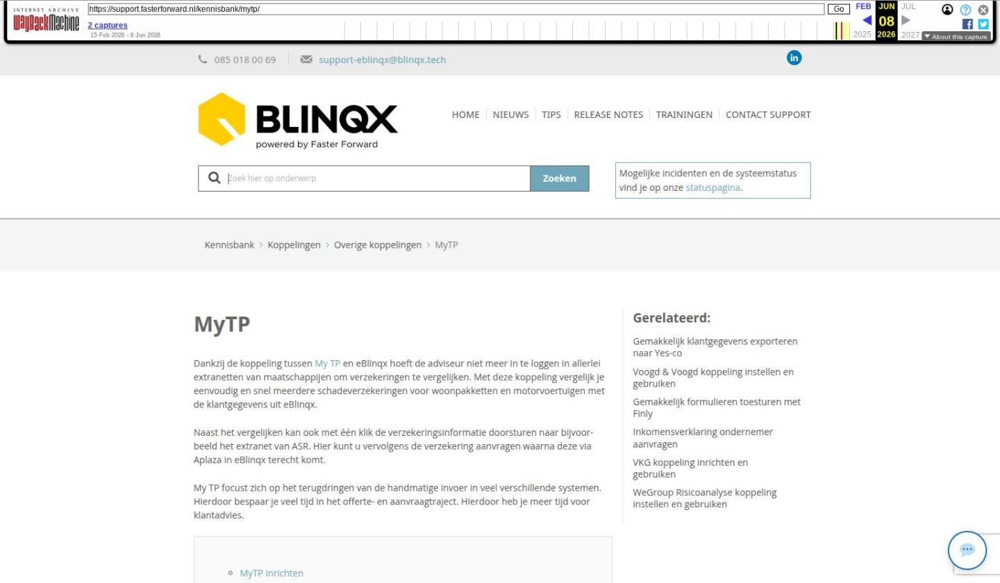

MyTP

Tekstinhoud
MyTP | Support
---
MyTP
Dankzij de koppeling tussen My TP en eBlinqx hoeft de adviseur niet meer in te loggen in allerlei extranetten van maatschappijen om verzekeringen te vergelijken. Met deze koppeling vergelijk je eenvoudig en snel meerdere schadeverzekeringen voor woonpakketten en motorvoertuigen met de klantgegevens uit eBlinqx.
Naast het vergelijken kan ook met één klik de verzekeringsinformatie doorsturen naar bijvoorbeeld het extranet van ASR. Hier kunt u vervolgens de verzekering aanvragen waarna deze via Aplaza in eBlinqx terecht komt.
My TP focust zich op het terugdringen van de handmatige invoer in veel verschillende systemen. Hierdoor bespaar je veel tijd in het offerte- en aanvraagtraject. Hierdoor heb je meer tijd voor klantadvies.
MyTP inrichten
Gebruik MyTP en eBlinqx
Gebruiker MyTP aanmaken
Status inzien
Instructievideo's
MyTP inrichten
Wil je gebruik maken van MyTP in combinatie met eBlinqx? Stuur dan een e-mail naar support-eblinqx@blinqx.tech. Wij zorgen ervoor dat MyTP gegevens vanuit eBlinqx kan opvragen.
Gebruik MyTP en eBlinqx
Je kunt MyTP direct openen vanuit het schadeproduct. Rechts in de productkaart vind je een knop 'Open in MyTP' waarmee je direct een nieuwe vergelijking kunt opstarten of waarmee je naar de voorgaande vergelijkingen kunt gaan. Zo hoef je niet uit het product te gaan om de vergelijking in MyTP op te starten.
Het is ook mogelijk om MyTP buiten het schadeproduct te openen. In het klantdossier in eBlinqx ga je naar het tabblad MyTP. Hier klik je op de knop 'Open in MijnTP'
Je wordt dan doorgeleid naar MyTP. Vanuit daar kan je direct met de juiste klant en zijn gegevens starten met vergelijken. De velden die zijn opgehaald worden gemarkeerd, waarna je een eenvoudig 9-stappenplan volgt. Hierbij hoef je vrijwel alleen de gegevens te controleren en nauwelijks gegevens aan te vullen.
De vergelijking wordt zoveel mogelijk vooraf ingevuld. Hierbij wordt ook de huidige situatie van de klant in kaart gebracht. Vervolgens komt er een vergelijkingsoverzicht tot stand. De gewenste verzekering kan je direct aanvragen bij de verzekeraar. De verzekeraar stuurt het polisblad/de gegevens op en deze komt binnen in jouw Aplaza inbox in eBlinqx.
Gebruiker MyTP aanmaken
Wanneer MyTP is ingericht dan wordt er één gebruiker als beheerder aangemerkt. Deze gebruiker kan zijn collega's vanuit MyTP uitnodigen, zodat zij hun eigen account hebben in MyTP. Dit regel je als volgt. Je logt in in MyTP. Via het poppetje rechts bovenin open je Admin:
Rechts zie je direct 'Gebruikers' staan. Via de knop 'Gebruiker uitnodigen' kan je een e-mail versturen naar jouw collega om het account aan te maken.
Je vult het e-mailadres in, de naam van jouw collega en vervolgens de rol. Indien je bij de rol 'Beheerder' selecteert dan kan deze gebruiker ook in het Admingedeelte van MyTP komen en diverse zaken instellen en aanvragen.
Er wordt een e-mail naar het ingevulde e-mailadres gestuurd met daarin een link. Door hierop te klikken, kan jouw collega het account activeren/aanmaken.
Status inzien
Links in het menu kan je klikken op Gebruikers.
Onderin zie je diverse informatie over de uitnodigingen die verstuurd zijn en daarbij ook de status. Via de envelop kan je de e-mail nogmaals versturen. Via het prullenbakicoon kan je de uitnodiging verwijderen.
Instructievideo's
Hier kan je eventueel een kennismakingsvideo met korte demo over MyTP terug zien. En hier is een uitgebreide instructievideo te zien.
Laatste update: 15 oktober 2025
Was deze informatie nuttig?
Ja Nee